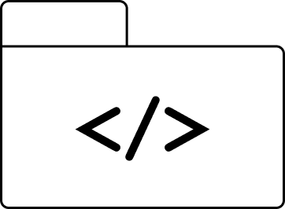

READ ME
EDUCATION
SKILLS
WORK EXPERIENCE
I am a graduate from the University of Cape Town with a Bachelor of Science in Computer Science and
Economics. My decision to pursue these fields stemmed from a desire to create designs that are not only efficient
and practical, but also serve the greater good of the community. For this reason, I found my degree highly
fulfilling and intellectually stimulating.
I am currently a Data Analyst & Engineer at GUUD, a company focused on mobility to drive solutions for
the lack of access to affordable and accessible medical care in South Africa.
In addition, I am studying a part-time Full Stack Web Development course through HyperionDev to continue
expanding my knowledge in the tech industry and to pursue my interest in the creative and design world.
I matriculated from Rhenish Girls' High School in 2018 and spent time in Vietnam working as an English
teacher, gaining both professional and cultural experience through travel. The following year, I began my
academic journey at the University of Cape Town, graduating with a Bachelor of Science in Computer Science and
Economics.
In my current role as a Data Analyst and Engineer at GUUD, I discovered that my passion for learning and
problem-solving continues to grow. To build on this momentum and deepen my technical and creative skill
set, I enrolled in the Full Stack Web Development bootcamp at HyperionDev — an experience that has been both
challenging and incredibly rewarding.
Alongside my technical background, I hold a Trinity College London qualification in Drama and am a
trained clarinetist through the Royal Schools of Music. The arts have always played an important role in my
life, and I continue to explore creativity and self-expression through my personal pursuits.
Languages & Frameworks
Python – Experienced in data analysis, automation, and backend engineering; comfortable with libraries like Pandas and Flask/Django for web backends.
Kotlin – Familiar with Android app development and modern mobile UI principles; capable of building clean, responsive Android apps.
JavaScript (Vanilla, Next.js, React, Express.js) – Strong in core JavaScript and DOM manipulation. Skilled with React for component-based UIs, Next.js for server-side rendering and optimised web apps, and Express.js for backend REST APIs.
Java – Solid foundation in object-oriented programming, data structures, and backend development patterns.
Databases
MySQL – Skilled in writing queries, joins, and stored procedures; strong understanding of relational database design and optimisation.
PostgreSQL – Familiar with advanced SQL queries, JSON support, and data aggregation for analytics-driven apps.
MongoDB – Experience with NoSQL database design, schema flexibility, and integrating with Node.js.
Mongoose – Proficient in modelling MongoDB data with schemas and validation in Express/Node.js apps.
Docker – Knowledge of containerising applications for easier deployment, testing, and environment consistency.
📊 Data Analytics & Visualisation
Metabase – Used for dashboard creation, query building, and extracting business insights from SQL databases.
Power BI – Comfortable building interactive dashboards, transforming datasets, and delivering actionable insights to stakeholders.
Web Design
Figma – Proficient in wireframing, prototyping, and designing responsive UI/UX layouts.
HTML & CSS – Solid foundation in semantic HTML, responsive CSS (Flexbox, Grid), and web styling best practices.
Bootstrap – Familiar with rapid development using prebuilt responsive components.
Tools & Technologies
Git & GitHub – Experienced with version control, branching, pull requests, and collaborative workflows.
Node.js & NPM – Skilled in managing JavaScript dependencies, writing backend logic, and building full-stack apps.
Notion – Used for project planning, documentation, and personal knowledge management.
ClickUp – Applied for task management, sprints, and collaborative project tracking.
GUUD (City of Cape Town, South Africa):
- Junior Data Analyst & Engineer (Full-time | Mar 2025 – Present): Currently working in a hybrid role
focusing
on data analysis and engineering tasks to support healthcare mobility solutions.
- Data Analyst Intern (Sep 2024 – Feb 2025): Completed a 6-month internship contributing to data
cleaning,
reporting, and insight generation for medical accessibility projects.
Kloof Street House (Cape Town, South Africa):
- Waitress (Dec 2021 – May 2024)
Delivered high-end customer service in a fast-paced restaurant setting. Built strong skills in
upselling,
adaptability, and team coordination.
Private Family (Cape Town, South Africa):
- Au Pair (Part-time | Jan 2021 – Dec 2021): Provided childcare support, emphasizing safety,
organization, and
educational play.
Loading Bay & Pauline’s (Cape Town, South Africa):
- Waitress (Part-time | Jan 2021 – Oct 2021): Assisted in customer service and food delivery in a
boutique
hospitality setting.
Man’oushe Restaurant (Stellenbosch, South Africa):
- Waitress (Part-time | Feb 2019 – Nov 2020): Supported front-of-house operations with a focus on
teamwork,
attention to detail, and leadership in a dynamic environment.
VietMy English Centre (Buon Ma Thuot, Vietnam):
- English Second Language Teacher (Freelance | Aug 2019 – Oct 2019): Taught English to children aged
3–17 as
part of a cultural immersion experience during a gap year. Gained skills in classroom management,
creativity,
and empathy.